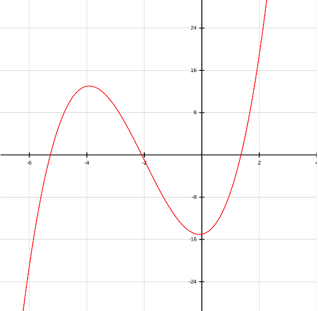
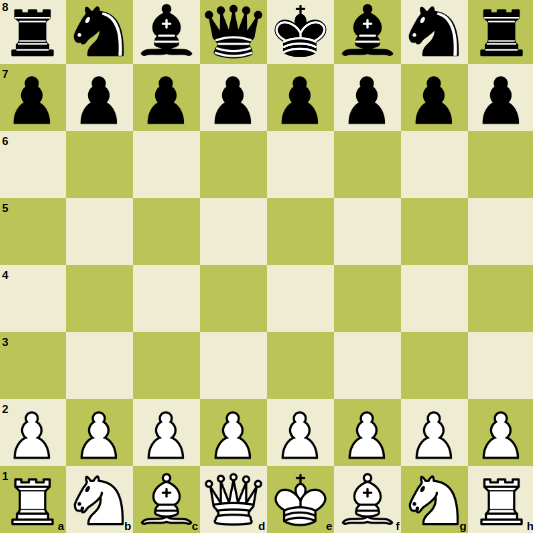
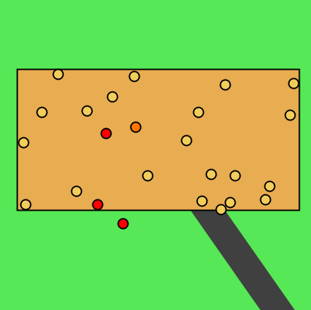
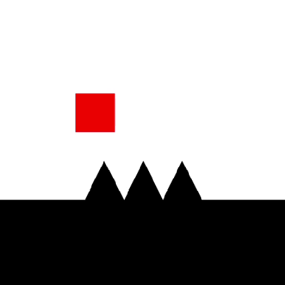
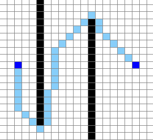

Projects
Graphing Calculator

A tool used to graph functions and obtain properties of functions. This is similar to the TI-84 calculator made by Texas Instruments. Some of its features are being able to graph multiple functions with multiple colors, determine the roots of a graph, and calculating the point of intersection of any pair of graphs. It uses Newton's method, which uses the derivative of a function to estimate the root, and applies this process on the new estimate to obtain an even more accurate result. The display is also interactive; one can use a mouse and drag around the graph, and use the scroll wheel to zoom in and out.
Chess

The game of chess programmed using JavaScript, including an AI that automatically plays chess by looking ahead a few moves, and evaluating the move based on the weight of each chess piece, and the position of the pieces. It uses the minimax algorithm, which is a form of iterative deeping depth-first search. For any board state, it considers every possible move, and recursively calls the function on the new board when a move is applied. Since chess boards have many possibilities, the minimax algorithm is limited to a certain depth. I want to revamp this simple website into one where accounts can be created.
Virus Simulator

Simulates a virus by starting with one infected person, and as people walk around, they spread the virus. This is meant to demonstrate the effects of moving around and travelling on the spread of a virus. As people move around more, they introduce the virus to new areas, which causes a lot of cases. Houses are connected by roads, and people can travel between houses if they are connected. This program allows the user to create their own simulation to experiment.
Autoscroll Adventures

Platformer game inspired by Geometry Dash. The player must avoid all obstacles and reach the end of the level to win. The player can play as two characters: one that can fly, and one that can jump. I like the way I organized the project using the model–view–controller design pattern. Here is a video showing the design process of the game.
Pathfinder

An application built in Python and rendered using the pygame library. This uses the A* search algorithm, which determines the minimum path between two nodes. In this application, the nodes are each of the grid tiles, and the neighbors are the eight surrounding grid tiles. The algorithm uses a heuristic function, which estimates the distance between a given node and the goal node. This function guides the search of the algorithm. During each step of an algorithm, the node with the minimum score, which is the sum of the heuristic value and the weight already traversed, that is not visited is considered. Then, each of its neighbors is analyzed. If the path to the node then to a neighbor is a better path, the algorithm updates the minimum distance between the start node and the neighbor node.